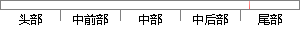

单元测试主要是针对于软件层面的最小单元的代码层面的测试。
片段位置图

相似结果|
相似片段 1：单元测试主要是指对软件中最小的可测单元进行检查与验证。将对于软件中最小的可测单元进行测试的代码称为单元测试用例。单元测试用例通常根据软件中最小可测单元的输入与输出来判断该最小可测单元是否通过单元测试
|
※ 片段修改建议 ※
近似词参考：- 主要：首要 重要
- 要是：如果
- 单元：单位
系统自动生成语句：单位测试首要是针对于软件层面的最小单位的代码层面的测试。
注：本片段修改建议为系统自动生成，仅供参考。